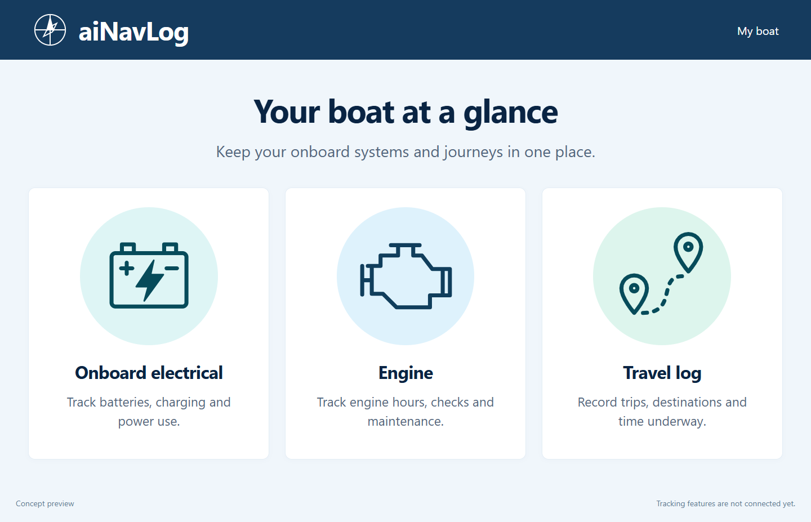

Onboard electrical
A focused view of house and starter batteries, including voltage, current and charge.
Meet aiNavLog — an AI marine navigation tool designed to improve safety and your experience at sea.
Bringing onboard systems, engine information and travel logs together, so you can spend less time piecing things together and more time enjoying the water.
Explore the app previewPlanned for the Apple App Store and Google Play.
A first look at the aiNavLog home screen.

A focused view of house and starter batteries, including voltage, current and charge.
Fuel, coolant, oil and charging information, brought together in one place.
Your recent trips, destinations, distance traveled and average speeds.